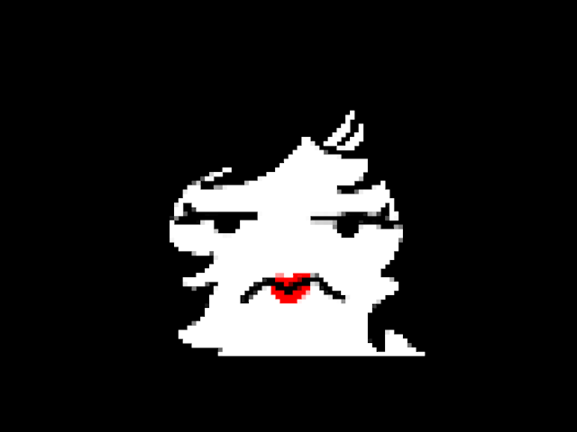
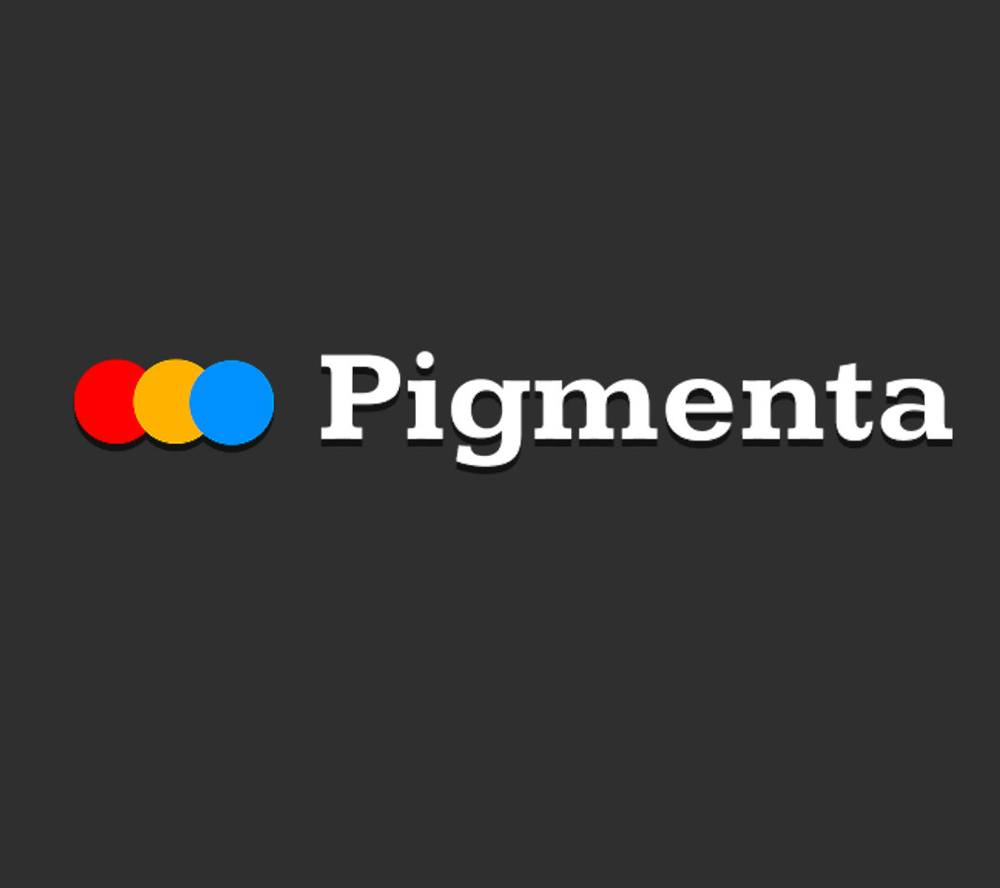
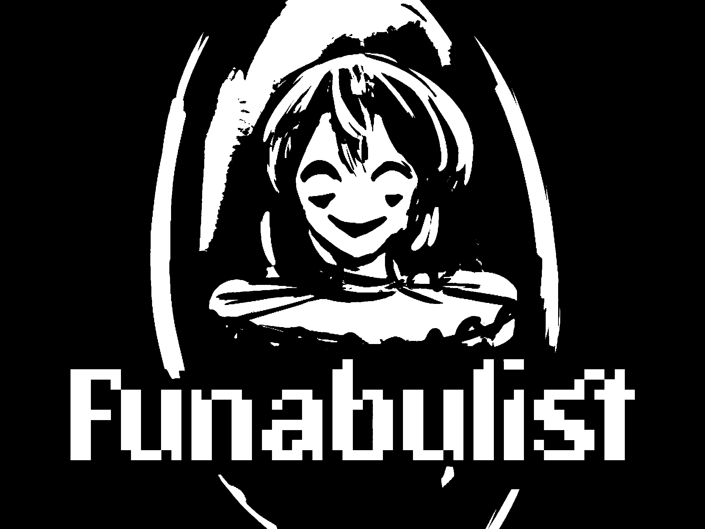
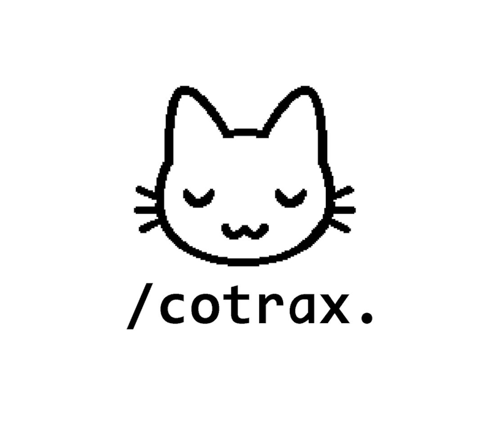

Latest Projects

Halo Mumun
A lightweight and casual AI assistant built with Python that can listen to you and talk back with a voice.

Pigmenta
A minimalist desktop app to extract and display dominant colors from your images.

Funabulist
Side-scroller slackline game built with Love2D.
Role: Main Menu Design & Programming, 2D Artist, Cutscene Programmer

Cotrax
A VS Code extension that tracks and visualizes your coding time.
Role: Front-End Developer (HTML, CSS, JS, a bit of TypeScript) & SQLite3 for initial local storage demo